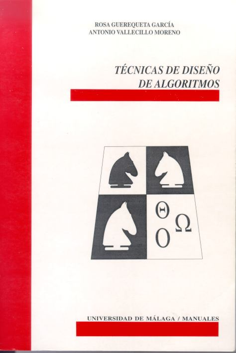

| Técnicas de Diseño de Algoritmos
Rosa Guerequeta y Antonio Vallecillo
|
 |

Contenidos

Resumen
La algoritmia es uno de los pilares de la programación y su relevancia se muestra en el desarrollo de cualquier aplicación, más allá de la mera construcción de programas. Este es un libro introductorio sobre análisis y diseño de algoritmos que pretende exponer al lector las técnicas básicas para su diseño e implementación, así como presentar unas herramientas que le permitan medir su efectividad y eficiencia.
Esta obra nace con la intención de llenar un vacío en la bibliografía existente. En primer lugar ofreciendo un método de diseño general aplicable a cada una de las técnicas, y en segundo lugar proporcionando un enfoque eminentemente práctico a través de una amplia selección de ejemplos y problemas resueltos (más de 100).
El diseño del libro se ha realizado de manera que pueda ser utilizado como base para cualquiera de las asignaturas introductorias de la algoritmia. De ahí su estructura y organización, así como la didáctica con la que se desarrollan los temas. En el texto se estudian las principales técnicas de diseño: Divide y Vencerás, algoritmos ávidos, Programación Dinámica, Vuelta Atrás y Ramificación y Poda. Cada tema comienza con una breve introducción teórica en la que se exponen los fundamentos de la técnica tratada y el tipo de problemas que resuelve. A continuación se presenta el esquema general de funcionamiento de los algoritmos que produce. Finalmente, se desarrolla una colección de problemas que permiten mostrar las distintas formas de aplicación de la técnica estudiada. Conforme se avanza en los problemas se discuten los pormenores de su diseño, los detalles de implementación, y el análisis de su eficiencia.
En definitiva, una obra que puede ser de gran utilidad no sólo a los alumnos de carreras técnicas, sino a todos aquellos profesionales de la informática que deseen profundizar en el apasionante estudio de la algoritmia.